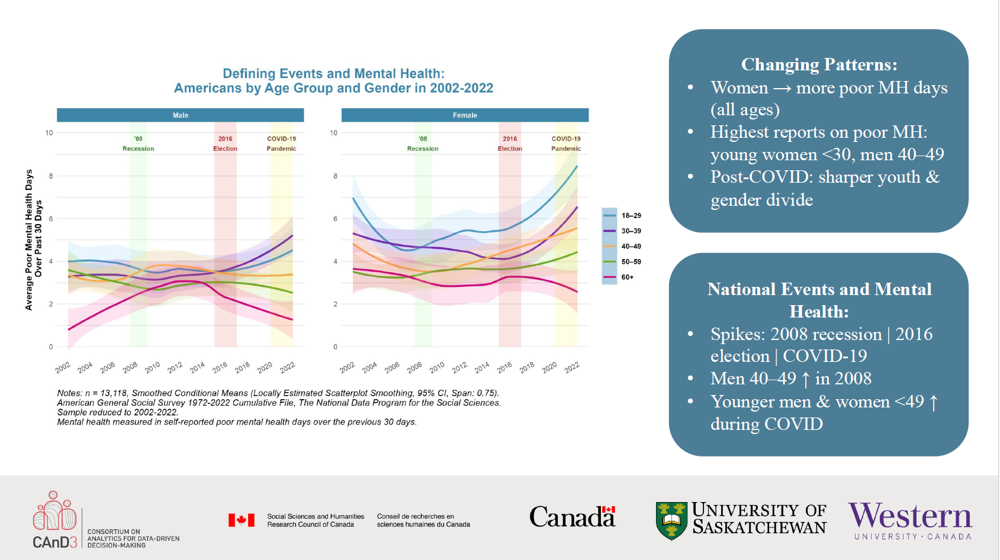
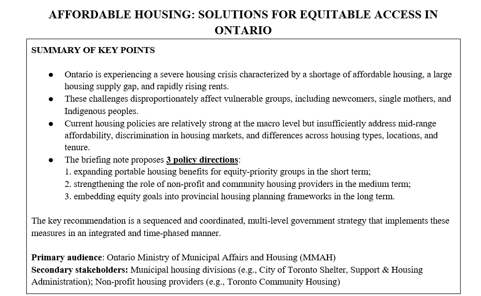
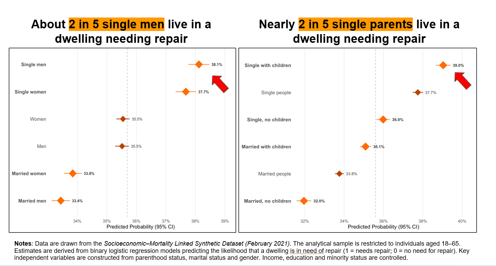

Fellowship
CAnD3 Projects
Mental Health Inequalities in Times of Social Upheaval (Leah Houseman and Tuğce Kırmacı Kamber)

Our analysis investigated how patterns of self-reported poor mental health days changed among Americans between 2002 and 2022, across gender and age groups. We further explored whether defining national events (the 2008 financial crisis, 2016 Elections as a point of heightened political polarization, the COVID-19 pandemic) correspond with shifts in mental health patterns.
Affordable Housing: Solutions for Equitable Access in Ontario (Beren Crim Sabuncu, Jiawen Li, Tuğce Kırmacı Kamber, and Valeriia Yakushko)

This briefing note examines Ontario's affordable housing crisis through the lens of equity and social policy. Drawing on quantitative data and policy analysis, it identifies structural barriers to housing access and outlines actionable recommendations for expanding equitable housing across urban and suburban communities in Ontario.
Inequalities in Housing Conditions (Beren Crim Sabuncu, Jiawen Li, Tuğce Kırmacı Kamber, and Valeriia Yakushko)

Our analysis investigated hidden housing risks in quality housing with a focus on marital status and parenthood. We found that being a single man and being single with children are strong predictors for living in a dwelling that needs repair.